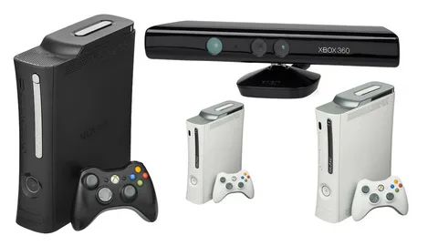
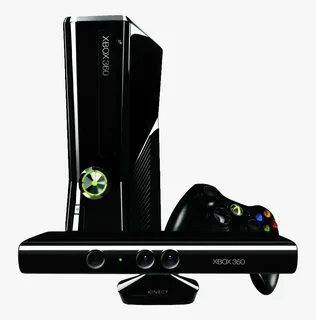

Ревизии:Xbox 360 Premium (2005), Xbox 360 S (2010), Xbox 360 E (2013)
Дата выхода:
1 ноября 2007(В России)
Прекращение поддержки:
20 апреля 2016


ㅤㅤㅤㅤㅤㅤㅤㅤㅤㅤㅤㅤㅤㅤㅤㅤㅤㅤㅤㅤㅤㅤㅤㅤㅤㅤㅤㅤㅤㅤㅤㅤㅤㅤㅤㅤㅤㅤㅤㅤㅤㅤㅤㅤㅤㅤㅤㅤㅤㅤㅤㅤㅤㅤㅤㅤ
Ревизии:Xbox 360 Premium (2005), Xbox 360 S (2010), Xbox 360 E (2013)
Дата выхода:
1 ноября 2007(В России)
Прекращение поддержки:
20 апреля 2016
Xbox 360 — вторая по счёту игровая приставка компании Microsoft,которая последовала за Xbox.Конкурентами Xbox 360 среди игровых консолей седьмого поколения являлись Sony PlayStation 3 и Nintendo Wii.Некоторые из основных функций Xbox 360 представлены сервисом Xbox Live,позволяющим играть через Интернет,а также загружать контент — видеоигры,демоверсии,трейлеры,музыку,ТВ-шоу и т.п.
Xbox 360 была официально анонсирована на канале MTV 12 мая 2005 года,а более детальная информация о приставке была представлена в том же месяце на выставке E3.Все доступные на время выпуска приставки были успешно проданы в каждой стране,кроме Японии.По состоянию на июнь 2010 года,существует 41,7 миллиона приставок Xbox 360 по всему миру.
В 2009 году на веб-сайте компьютерной тематики IGN Xbox 360 была названа шестой величайшей игровой приставкой всех времён,попав в список из 25 позиций.
На крупнейшей выставке игр Electronic Entertainment Expo 2013 был представлен обновлённый дизайн Xbox 360.
В момент анонса упомянутой Xbox 360 S Microsoft заявила,что их консоль просуществовала только половину своего рабочего цикла и что он продолжится до 2015 года.
20 апреля 2016 года было объявлено о прекращении производства.